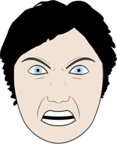

The nature of emotions is an ongoing scholarly debate. Over the years, many different explanations have been put forward, resulting in various emotion models. Most models are based on one of two major approaches. In the dimensional approach, emotions are being described by a small number of independent dimensions – usually two or three. For instance, the circumplex model by James Russell describes emotion via the dimensions “pleasure” and “arousal”. The categorical approach, on the other hand, assumes a finite number of basic emotions, which describe innate emotional reactions.
Grimace was based on the emotion model described in chapter 2 of Making Comics by Scott McCloud, a manual for artists how to convincingly draw facial expressions in comics. It follows the categorical approach, postulating 6 basic emotions:
|  Anger |
Joy |
Surprise |
Disgust |
Sadness |
Fear |
Artists who want to draw convincing portraits of humans need to be expert observers of facial expression. The Artist's Complete Guide to Facial Expression by Gary Faigin, a guide to drawing detailed facial expressions, is based on this model. McCloud shows how to depict emotion through facial expressions in the world of comics, offering the ideal framework for our work.
In McCloud's model, these basic emotions can be mixed to produce more complex emotions. The book illustrates how mixtures of any two basic emotions look like. It is asserted that mixtures can occur in arbitrary intensity and might even include three emotions.
You can learn more about the theory behind Grimace in the Research section.